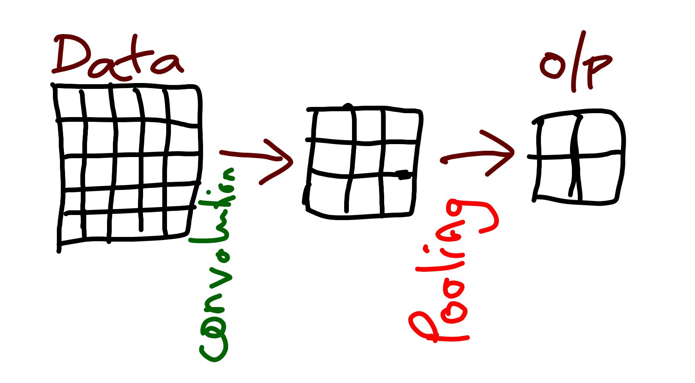

|
Prachodayan Enlightening Minds |
|
This tutorial attempts to explain the
fundamental operations involved in the working of a Convolutional Neural Network (CNN). In this
experiment we have shown single convolutional layer and one pooling layer.
|
 Figure: : Convolutional Neural Network |
Layers: Convolution: This layer performs the dot product between a portion of data matrix and the filter matrix. The process is repeated till all the elements are covered in the data matrix by adding the stride value to the filter position in x and y directions. Formula:, A = [[a1,a2], [a3,a4]]; B=[[b1,b2],[b3,b4]]; A.B (A dot B) = [[a1*b1 , a2*b2], [a3*b3, a4*b4]] |
||||||
2. Pooling: A pool window will be applied to a portion of input matrix and one value will be extracted out of the portion which depends on the type of pooling used. If max pooling is used, the highest value from the pooling window portion of the input matrix is extracted whereas average pooling calculates the average of the values in the pooling window portion of the input matrix and produces it as the result. The process is repeated by adding pooling stride value to the pooling window position in x and y direction until all the input matrix is covered. Formula: Max_Pool [[1,2], [3,4]] =4; Avg_Pool [[1,2], [3,4]] = 2.5 ((1+2+3+4)/4) |
||||||
Parameters:
1. Stride (s): It specifies the number of steps to increase the position of filter in 'x' and 'y' direction of data matrix during convolution operation. Similary, pool stride specifies the step increase value of pooling window. However in our experiment we have options of convolution stride values as 1 or 2 while pool stride value is fixed to 1.
|
||||||
2. Padding, (p) [valid/same]: Padding is the process of adding number of 0s in the border of data matrix. Valid padding is zero padding where no additional 0s are added to the input matrix whereas valid padding adds 0s to make input matrix dimension equal to the output matrix dimension. Formula: No of layers to be padded, p= 0 if padding = "valid", p= (f-1)/2 where f is the filter matrix dimension |
||||||
3. Number of filters (nf): To extract multiple features from input data, multiple filters will be used. Each filter may contain different values to do dot product with data matrix. However to maintain simplicity in the experiment, we have this parameter only to demonstrate output matrix dimension and filters are assumed to have same values as mentioned in filter matrix of the experiment. Output: sigmoid_activation(z) = 1 / (1 + e- z) |
| Dimension of the output matrix: |
| Formula: Output dim = floor [ (n+2p-f/s) + 1 ] X nf |